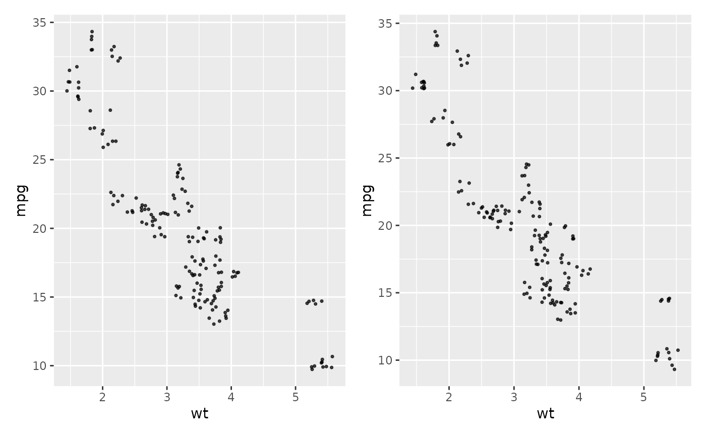
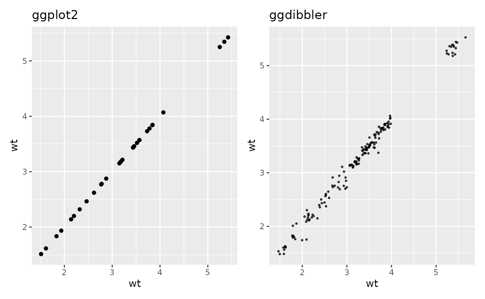
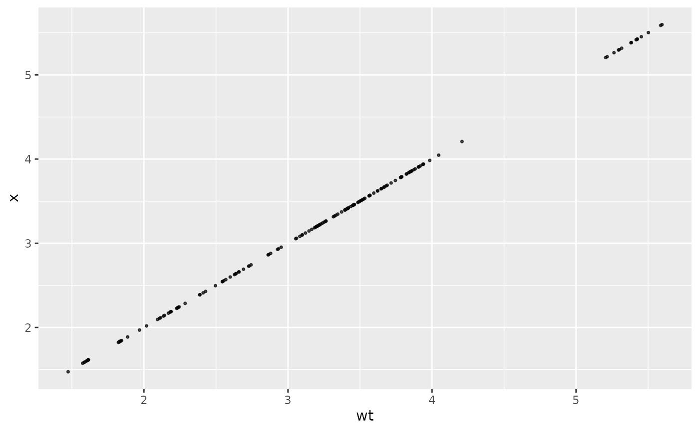
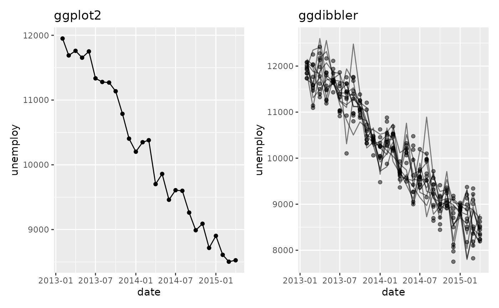
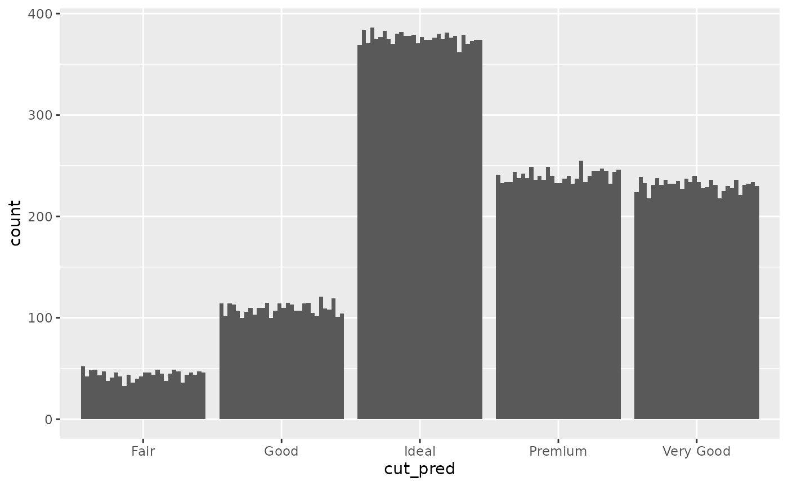
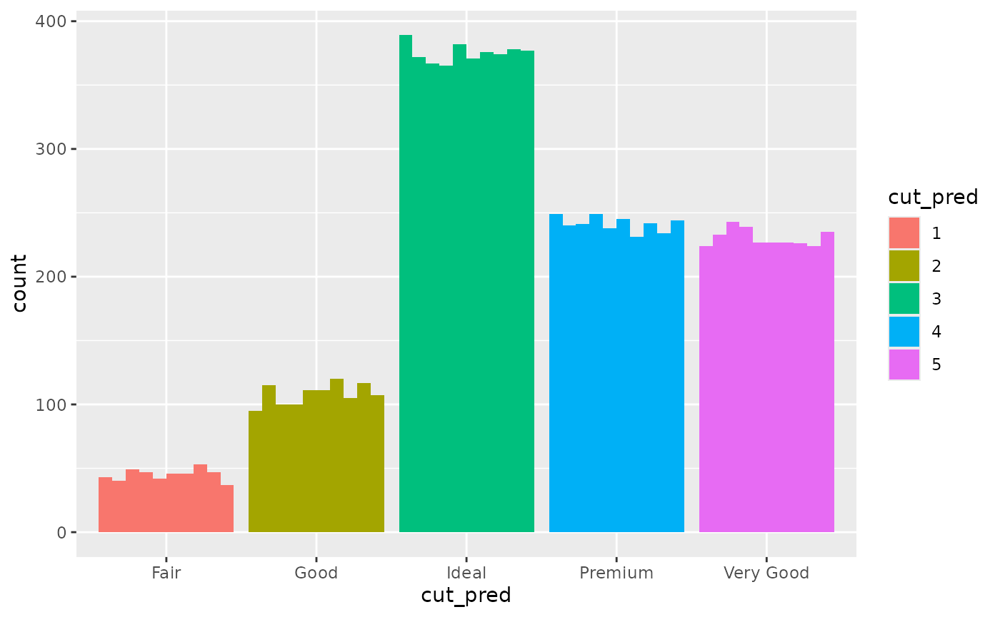
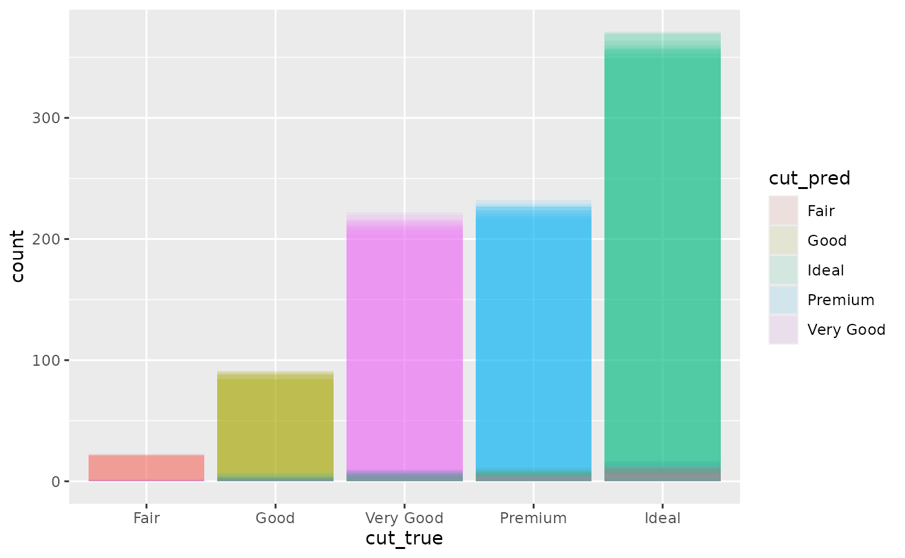

##
## Attaching package: 'dplyr'## The following objects are masked from 'package:stats':
##
## filter, lag## The following objects are masked from 'package:base':
##
## intersect, setdiff, setequal, union
library(tibble)
library(patchwork)
# make prediction diamonds data
diamonds_pred <- smaller_diamonds
diamonds_pred$cut_pred <- smaller_uncertain_diamonds$cut
diamonds_pred <- diamonds_pred |>
rename("cut_true" = cut) |>
relocate(c(cut_pred, cut_true), .before = carat)
options(rmarkdown.html_vignette.check_title = FALSE)ggdibbler produces random plots, which means each time
you call a plot, it is different. This behaviour makes sense, as every
plot is just one of many possible outcomes you can have when you
represent a distribtion by a sample. If you are used to the
deterministic behaviour of ggplot, the randomness can be offputting,
although not technically incorrect. Some of these will be easily
mitigated with a seed option which we plan to implement, but by default
the plots are random.
Saving plots
When you save a plot, ggplot2doesn’t technically save
the plot itself. It saves the code that makes the plot. It only actually
runs the code when ggplot_build() is called, which is only
called when you print the plot.
plot <- ggplot(uncertain_mtcars, aes(wt, mpg)) + geom_point_sample(times=5)
plot + plot
The two scatter plots above were called using the same variable
plot and would be identical if they were a ggplot, but you
can see they are slightly different.
Calling the same variable twice
ggdibbler assumes all aesthetic distributions passed are independent, which means if you pass the same variable to two different aesthetic, they will be different samples.
p1 <- ggplot(mtcars, aes(wt, wt)) + geom_point() +
ggtitle("ggplot2")
p2 <- ggplot(uncertain_mtcars, aes(wt, wt)) + geom_point_sample(times=5) +
ggtitle("ggdibbler")
p1 + p2
By the time a column gets to the stat where we draw the samples, we do
not have the variable names anymore. This means we can’t be sure which
variables are actually identical versus which variables only appear to
be identical. You can get the identical behaviour by one of the draws
using the after_stat function.
ggplot(uncertain_mtcars, aes(wt, after_stat(x))) + geom_point_sample(times=5) 
This problem is particularly problematic when you have multiple layers using the same variable.
recent <- economics[economics$date > as.Date("2013-01-01"), ]
uncertain_recent <- uncertain_economics[uncertain_economics$date > as.Date("2013-01-01"), ]
p1 <- ggplot(recent, aes(date, unemploy)) +
geom_line() +
geom_point() +
ggtitle("ggplot2")
p2 <- ggplot(uncertain_recent, aes(date, unemploy)) +
geom_line_sample(alpha=0.5)+
geom_point_sample(alpha=0.5) +
ggtitle("ggdibbler")
p1 + p2
The simple after_stat trick doesn’t work here, so fixing
this actually need to implement seeds in the layers (if you have a work
around for this, please tell me).
Random variables don’t always “look” random
In showing ggdibbler to people, I have noticed that
there are a few instances where the package does not behave in the way
they expect. Sometimes this is because of a bug on the packages part,
but I have also found that it can be because people are unsure what they
mean when they talk about uncertainty.
Most exploratory visualisation software is built with safety bumpers
for poorly formed questions. If you want to plot a categorical variable
with no rational order to an order aesthetic, like the x position,
ggplot2 will let you. Like ggplot,
ggdibbler will try and show you the plot you asked for,
which will not always be the plot you think you asked for. This will be
easiest to see with an example.
Let’s say we are looking at the smaller_diamonds dataset
(which is just the diamonds dataset from
ggplot2, but… smaller) and we want to predict the cut using
the other variables. We make our fancy shmancy model, and then get a
predicted value for each class. Since our output is a prediction, we now
have a cut_true column, (our ground truth) and a
cut_pred which is our predicted distribution.
## # A tibble: 6 × 11
## cut_pred cut_true carat color clarity depth
## <dist> <ord> <dbl> <ord> <ord> <dbl>
## 1 Categorical[5] Very Good 0.55 F VS2 62.1
## 2 Categorical[5] Premium 2 G SI2 61.7
## 3 Categorical[5] Ideal 0.31 F VVS2 61.6
## 4 Categorical[5] Premium 1.52 I SI1 60.5
## 5 Categorical[5] Good 1.01 G VS2 62
## 6 Categorical[5] Ideal 0.82 I VS1 61.3
## # ℹ 5 more variables: table <dbl>, price <int>, x <dbl>, y <dbl>, z <dbl>You might want to look at the uncertainty in the predicted value, so, you plot a bar chart. You might want to know how many values are predicted to be in each group. So, you make the following bar chart:
ggplot(diamonds_pred, aes(x=cut_pred)) +
geom_bar_sample(times=30)
Looking at this plot, it is clear that the count value is uncertain, but
that uncertainty is coming from the uncertainty in the cut_prediction.
The cut_pred values don’t look very “uncertainty”, because in this plot,
they are not. This is the reality of visualising uncertainty for signal
supression. Since the stat_sample that is used to get
outcomes from the distribution is nested inside of ggplot’s
stat_count, the uncetainty in the prediction is carried
through to the variable the plot is designed to show, i.e. the count in
each category. If it makes you feel better, we can set the fill to be
the outputs so you can 100% see this is the case.
ggplot(diamonds_pred, aes(x=cut_pred)) +
geom_bar_sample(aes(fill=factor(after_stat(x)))) +
labs(fill = "cut_pred")
Of course, you can also set the fill to be a second independent draw from the prediction distribution, but this would convey the wrong information. You would be implying far more uncertainty than is actually in the bar chart. Instead of drawing from one distribution, we are drawing from two independent distributions that technically represent the same variable.
The reality is, distribution variables are “slippery” in a way that deterministic variables are not. They do not have a set value, so if their position on the x axis is not set by the sample outcome…. what are they set by? The reality, is, if you want the random variables anchored to something, YOU need to decide what to anchor them to. You need to decide what your random variables are conditional on. If you want them conditional on the deterministic final predicted value, you need to do that. Here is an example where they are anchored to the ground truth value and we colour by the prediction.
ggplot(diamonds_pred, aes(x=cut_true)) +
geom_bar_sample(aes(fill= cut_pred), times=10, alpha=0.1, position="identity")